Quatre services précis, une même exigence : des résultats que vous pouvez vérifier.
Chaque service a son offre, ses prix publiés et un exemple complet à télécharger. Une personne relit chaque livrable ; les faits, montants et fichiers sont contrôlés par des scripts, pas par l’IA.

Sachez qui contacter, et pourquoi — preuve à l’appui.Recherche commerciale qualifiée. Pilote dès 290 USD.Voir le service et son exemple
 Un catalogue bilingue fidèle à vos produits.Catalogues e-commerce FR/EN. Pilote dès 180 USD.Voir le service et son exemple
Un catalogue bilingue fidèle à vos produits.Catalogues e-commerce FR/EN. Pilote dès 180 USD.Voir le service et son exemple
- Une automatisation que vous pouvez suivre, arrêter et reprendre.Automatisations administratives fiables. Diagnostic + prototype dès 350 USD.Voir le service et son exemple

 Une candidature fidèle à votre parcours, que vous pouvez défendre.Dossiers de candidature FR/EN. Dossier dès 340 USD.Voir le service et son exemple
Une candidature fidèle à votre parcours, que vous pouvez défendre.Dossiers de candidature FR/EN. Dossier dès 340 USD.Voir le service et son exemple
La règle de la maison
- Un exemple complet, ouvrable et téléchargeable, pour chaque service.
- Des prix publiés et des limites écrites avant toute commande.
- Les faits, nombres et fichiers contrôlés par des scripts déterministes.
- Une personne relit chaque livrable avant remise ; 14 jours de retours.
IA et relecture humaine
Des modèles d’IA servent à préparer des brouillons. Chaque élément livré est vérifié par une personne, et les contrôles de faits, de montants et de fichiers sont faits par des scripts déterministes — pas par l’IA. Les données de votre dossier ne sont pas envoyées à un service d’IA tiers.
Fenêtre de retours de 14 jours après remise. Accusé de réception sous 2 jours ouvrés (UTC). Une erreur de notre part est corrigée sans frais ; un changement de cible ou une nouvelle demande fait l’objet d’un devis.